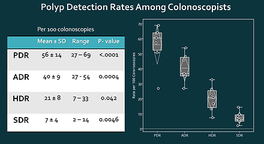

About
Qualoscopy began in 2012 at the University of California, Irvine.
The goal was to capture colonoscopy quality measures easily and accurately
for the purpose of continuous quality improvement and annual reporting.
Qualoscopy is browser-based, touch friendly and easy to use.
Endoscopy nurses enter data in real time during colonoscopy and
all data is immediately available to the colonoscopist to create
an accurate procedure note.
Qualoscopy's additional values became evident in 2014 when
CMS added colonoscopy quality indicators. A complete and accurate
report was immediately available. We also mined data for research
purposes leading to several presentations and publications.
Now that a clear roadmap has been set by CMS requiring quality
reporting and linking targets to reumbursement,
it became evident that the tool we have found so useful,
should be made generally available.
Polyp Detection

PDR = Polyp detection rate
ADR = Adenoma detection rate
HDR = Hyperplastic polyp detection rate
SDR = Sessile serrated adenoma detection rate